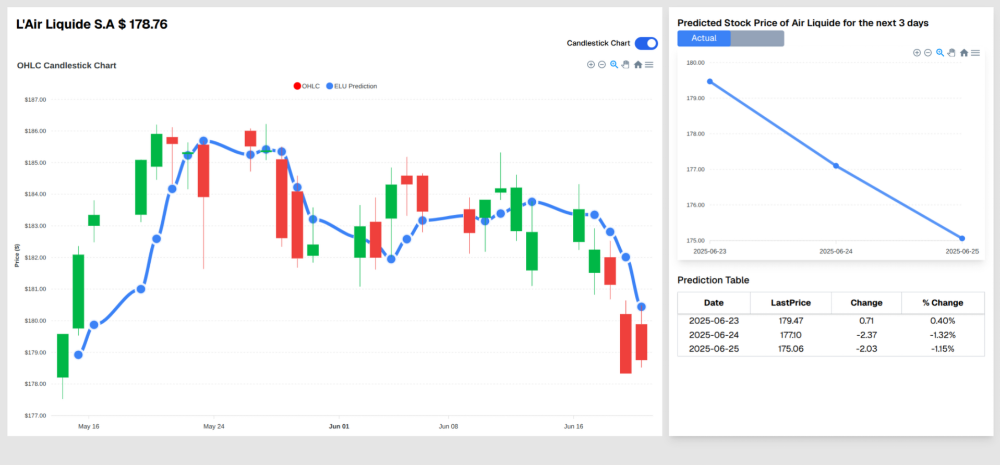
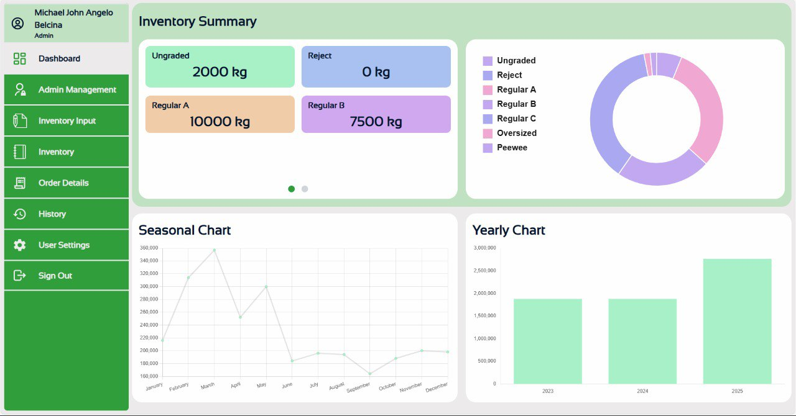
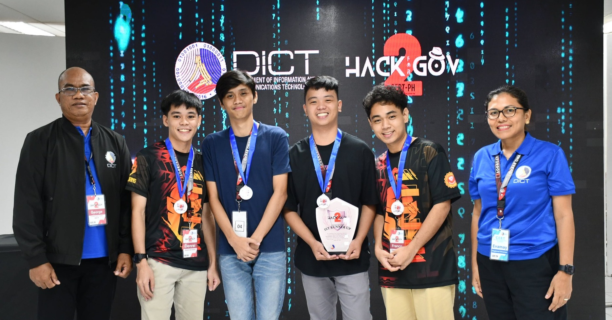
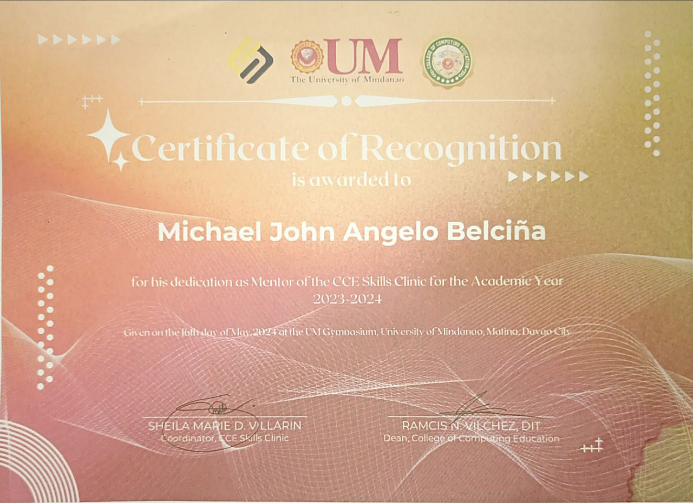
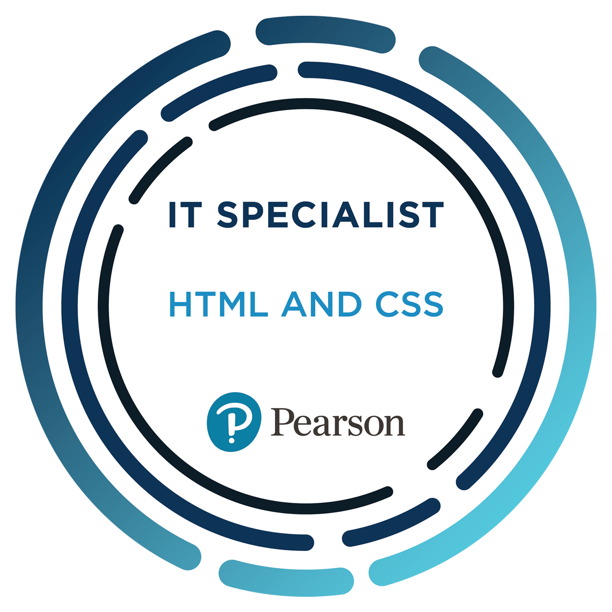

Hi, I'm Michael John Angelo Belciña
🧠 Code. Coffee. Chaos. Always in that order.
📄 Download Resume📁 Projects

🖥️ Thesis software
Designed and implemented a custom multi-layer LSTM model in PyTorch, replacing traditional tanh activations with ELU in the cell and hidden states to explore effects on learning dynamics and model expressivity. Developed a CustomLSTMCell class that supports flexible activation configurations and integrated it into a 3-layer architecture with dropout regularization. The model was used in a full-stack application built with FastAPI (backend) and Next.js (frontend) as part of a thesis project. Co-authored the research paper and contributed to both experimentation and deployment.

🖥️ M&S Inventory Management
Contributed mainly to frontend development and project documentation in a 3-member team building a full-stack inventory management system for a pomelo farm in Sarangani, Philippines. The application was developed using Next.js for both frontend and backend logic, with MySQL serving as the relational database. Implemented core UI components, optimized UX flows, and wrote technical documentation to support deployment and user onboarding.
🏆 Awards & Certifications
🏅 Hack4Gov: Region 11 Qualifiers

One of the highlights of 2023. Our team of four placed 2nd in the Region 11 qualifiers of DICT's national cybersecurity competition, Hack4Gov. It was a challenging event that tested our team’s skills and coordination. I'm proud of what we accomplished together.
🏅 CCE Skills Clinic

Recognized as a mentor for the CCE Skills Clinic, where I helped fellow students. It was a great experience sharing what I knew and learning along the way. And yes, the certificate got wet.
🏅 IT Specialist - Databases
Earned the IT Specialist certification in HTML & CSS from Certiport. Verified on Credly.
🏅 IT Specialist - HTML & CSS

Certified by Certiport in HTML & CSS fundamentals. Verification available on Credly.
🏅 IT Specialist - Network Security
Certified by Certiport in database fundamentals. Verification available on Credly.